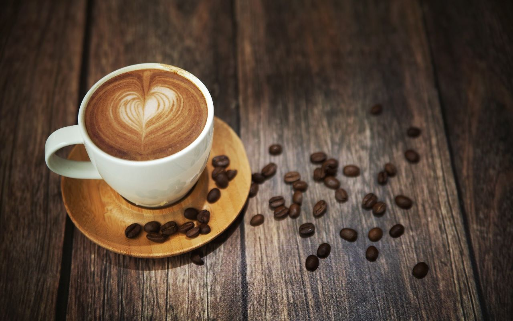

COFFEE CAFE
ABOUT US
Coffee Day, a part of Coffee Day Global Limited, is India’s favourite hangout for coffee and conversations. Popularly known as CCD, we strive to provide the best experience to our guests. Our coffees are sourced from thousands of small coffee planters, who made us who we are today and we're glad to be a part of their lives. We opened our first cafe in 1996 at Brigade Road in Bangalore – the youth and the young at heart immediately took to the cafe, and it continues to be one of the most happening places in the city. CCD to the youth is a “hangout” spot where they meet people, make conversations, and have a whole lot of fun over steaming cups of great coffee.It's been an exciting journey since then to becoming the largest organised retail cafe chain in the country.
